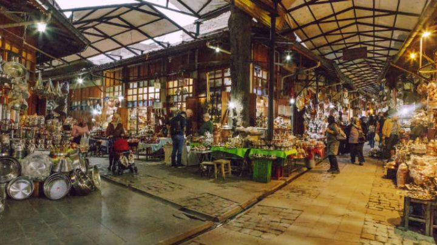

Bakırcılar Çarşısı, Gaziantep'in tarihi ve kültürel dokusunu yansıtan önemli bir alışveriş merkezidir. Şehrin merkezinde bulunan bu çarşı, geleneksel el sanatlarıyla ünlüdür ve zengin bir bakır işçiliği geleneğine ev sahipliği yapar. Çarşı, tarih boyunca bakırcılık mesleğinin merkezi olmuştur. Burada bulunan atölyelerde ustalar, yüzyıllardır aktarılan geleneksel teknikleri kullanarak bakır eşyalar üretirler. Bakırcılar Çarşısı'nda, tencere, tava, tepsi, semaver, sürahi gibi çeşitli mutfak eşyalarının yanı sıra dekoratif eşyalar da bulunur. Bakırcılar Çarşısı, dar sokakları, tarihi dokusu ve rengarenk dükkânlarıyla ziyaretçilerini büyüler. Burada gezinirken, çarşının atmosferinde kaybolabilir ve ustaların ellerinde nasıl şaheserler yarattığını yakından görebilirsiniz. Ayrıca, çarşıda bulunan dükkanlarda el yapımı bakır eşyaları satın alabilir veya hediyelik eşya olarak sevdiklerinize armağan edebilirsiniz.
Bakırcılar Çarşısı, Gaziantep'in kültürel mirasını yaşatan ve ziyaretçilere geleneksel el sanatlarını keşfetme fırsatı sunan önemli bir destinasyondur. Şehri ziyaret edenler için unutulmaz bir deneyim sunan bu çarşı, Gaziantep'in benzersizliğini ve zenginliğini yansıtır.
